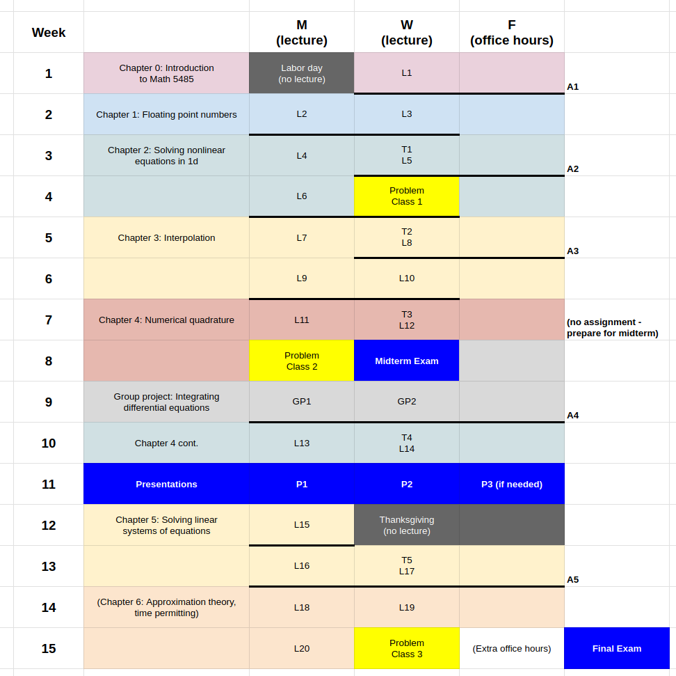

Course Syllabus
Solution of nonlinear equations in one variable. Interpolation, polynomial approximation. Methods for solving linear systems, eigenvalue problems, systems of nonlinear equations.
Fall 2026
- Meeting Times: MW 9:05 AM – 11:00 AM | Ford Hall 150
- Credits: 4
- Instructor: Jack Thomas
- Office: 331 Vincent Hall
- Office Hours: M 8-9, W 8-9, F TBC
- Course webpage: jackrthomas.github.io/Math5485/ (opens in a new tab)
Summary
First part of a two-semester sequence that explores the design and implementation of numerical methods to solve the most common types of problems arising in science and engineering. Typically these problems cannot be solved in terms of a classical analytical formula, and thus numerical methods must be used to approximate the solution. Topics include: how a computer does arithmetic, solving nonlinear equations in one variable, polynomial interpolation and approximation, methods for solving linear systems, and matrix eigenvalue problems. We study how and why numerical methods work, and also their errors and limitations.
In Math 5486 (opens in a new tab) , we will study numerical integration and differentiation, solving initial and boundary value ODEs, and (time permitting) PDEs.
Prerequisites
Math [2243 or 2373 or 2573]. This course assumes knowledge of calculus, linear algebra, and differential equations, and familiarity with some programming language.
Goals and Objectives
- Gain familiarity with numerical methods for approximating solutions to common problems arising in science,
- Be able to explain when and why certain methods do (or do not) work,
- Justify your explanations with rigorous error analysis,
- Test your understanding by implementing numerical methods and completing Jupyter notebooks.
Format
Two lectures per week (9:05-11 MW). Combination of blackboard (theory), Jupyter notebooks (practice), and problem classes.
Textbooks
We will use written up lecture notes from last year as well as the following texts, interactive notebooks, and (parts of) research articles:
- E. Süli and D. Mayers, An Introduction to Numerical Analysis, Cambridge University Press, 2003 (Süli and Mayers 2003)
- R. L. Burden, D. J. Faires, and A. M. Burden, Numerical Analysis, 10th Edition, Cengage, 2016 (Burden et al. 2016)
- T. A. Driscoll and R. J. Braun, Fundamentals of Numerical Computation. Available online https://fncbook.com/ (Driscoll and Braun 2017)
Other books which may be useful for parts of the course:
- L. N. Trefethen, Approximation Theory and Approximation Practice (Trefethen 2019).
Additional references will be provided on the webpage (opens in a new tab) .
Course Grading
The course will be graded by a combination of exams (midterm on the content of the first 7 weeks and final on the content of the whole course), assignments (Juptyer notebooks), and in-class tests (15 min test on course content at the start of the lectures).
- Midterm: Wed 28 Oct 9:05-11:00
- Final: Sat 19 Dec 10:30-12:30
The course grade is determined by the following components:
- Assignments & Participation 20%
- In-class tests 20%
- Midterm 20%
- A: Final Exam 40%, or
- B: Final Exam 30%, Presentation 10%
You will be given the opportunity to give a short presentation in the second half of the semester. If your final exam score is higher than the score for your presentation, your final exam will be worth 40% and your presentation will be worth 0% (we will take the maximum of A and B, as above).
Course Schedule
Here is the planned course schedule (which is subject to change).
L = lecture, A = assignment, T = in-class test

See Course Schedule (opens in a new tab) for an up-to-date version.
Course Policies
Attendance in class is mandatory. If you cannot attend the class for any reason, please let me know.
You will have at least one week to complete assignments. Assignments must be uploaded to Canvas by the deadline. Late assignments will not be accepted and score \(0\), though the application for an extension can be considered at most twice under reasonable circumstances, and you must send an email to me (cc Grader) as early as possible. If you get an extension, the assignment will be due on the following Monday at 9am (so that we may go through answers in class).
I encourage you to discuss the course material and assignment questions with your classmates. However, unless otherwise explicitly stated on the assignment, you must complete and write up your solutions on your own.
There is no make-up for in-class tests: if you are absent with good reason, the corresponding proportion can be added to the remaining in-class tests.
There is no make-up for the midterm exam: if you are absent with good reason, the corresponding proportion can be added to the final exam instead.
If accommodation for exams in the DRC center is needed, you have to send the accommodation letter to me as soon as possible.
AI usage
The Board of Regents Student Conduct Code states the following in Section IV, Subd.1: Scholastic Dishonesty:
“Scholastic dishonesty means plagiarism; cheating on assignments or examinations, including the unauthorized use of online learning support and testing platforms; engaging in unauthorized collaboration on academic work, including the posting of student-generated coursework on online learning support and testing platforms not approved for the specific course in question; taking, acquiring, or using course materials without faculty permission, including the posting of faculty-provided course materials on online learning and testing platforms; …”
Generative AI systems and online assignment help tools are online learning support platforms, which cannot be used for course assignments. We are testing your knowledge and understanding, not your ability to use GenAI.
The use of online learning support platforms are forms of scholastic dishonesty and will be treated as such.
Workload
This course is 4 credits. As per https://policy.umn.edu/education/timepercredit, this means you are expected to spend 3 hours x 4 = 12 hours per week on this course. This includes 4 hours of lectures, leaving 8 hours for reading lecture notes and other resources provided to you, completing assignments, preparing for in-class tests, presentations, mid-term and final.
Important dates
University Policy Statements
The University’s Education & Student life policies are available in the online Policy Library.
The University seeks an environment that promotes academic achievement and integrity, that is protective of free inquiry, and that serves the educational mission of the University. To support this environment, the University seeks a community that is free from violence, threats, and intimidation; that is respectful of the rights, opportunities, and welfare of students, faculty, staff, and guests of the University; and that does not threaten the physical or mental health or safety of members of the University community.
As a student at the University, you are expected to adhere to Board of Regents Policy: Student Conduct Code.
The following links to University Policy Statements are provided for your reference:
- Sexual harassment, sexual assault, stalking and relationship violence
- Equity, Diversity, Equal Employment Opportunity, and Affirmative Action
- Disability Services
- Academic Freedom and Responsibility.
Resources related to mental health, stress management, and counseling can be found here.